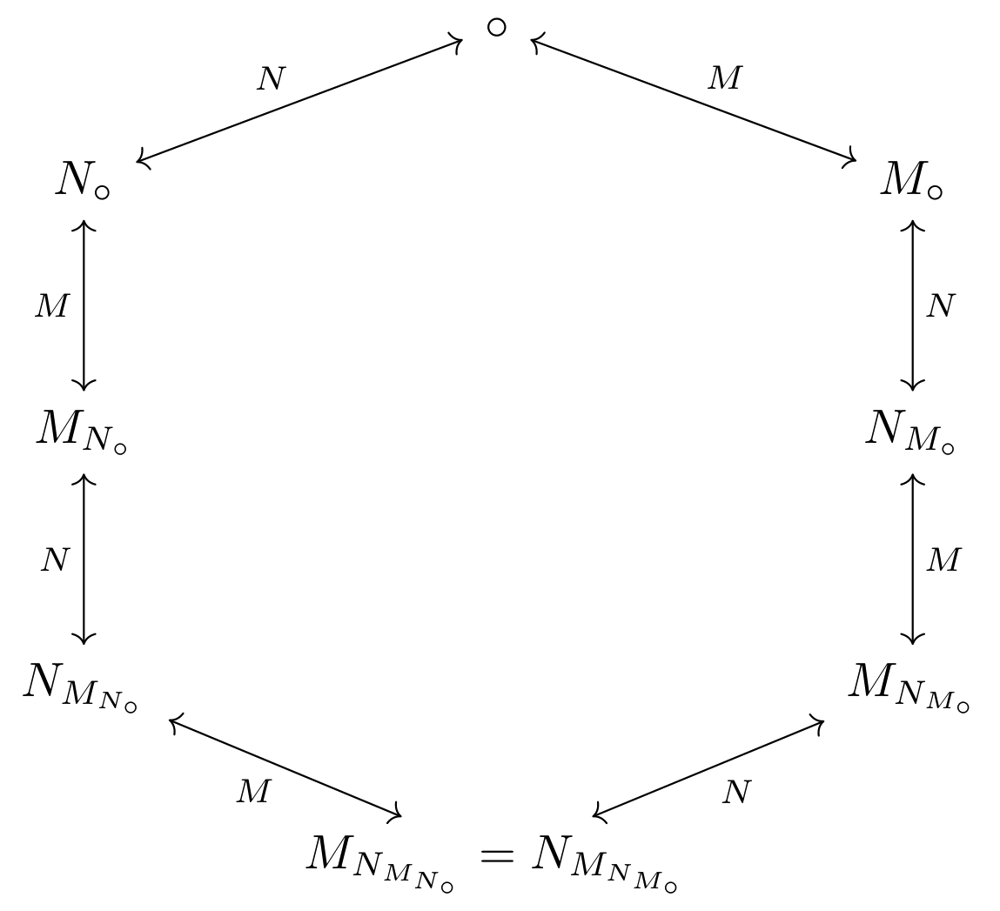

DifferentMathNotation
DifferentMathNotation
\[ \large \circ \]
\[ \large a \ \ N_\circ \ \ b \ = \ b \ \ \circ \ \ a \]
\[ \large a \ \ M_\circ \ \ b = z \ \ | \ \ a \ \ \circ \ \ z \ = \ b \]

Diagram
\[ \hrule \]
\[ \large (a \ \ \circ \ \ b) \ \ L_\circ \ \ (c \ \ circ \ \ d) = \ a \ \ \circ \ (b \ \ \circ \ \ (c \ \ \circ \ \ d)) \ = a \ \ \circ \ (b \ \ \circ \ \ e) , \ c \ \ \circ \ \ d \ = \ e \]
\[ \large + \]
\[ \large a + b = a \ \ N_+ \ \ b \]
\[ \large (a + b) + c = (a + b) \ \ L_+ \ \ c \]